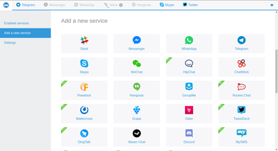

Franz
Dieser Artikel wurde für die folgenden Ubuntu-Versionen getestet:
Ubuntu 16.04 Xenial Xerus
Zum Verständnis dieses Artikels sind folgende Seiten hilfreich:
Franz  ist ein Freeware-Multi-Messenger. Benannt ist er nach dem ehemaligen Kaiser Franz Joseph I. von Österreich-Ungarn. Ziel des Programm ist es, möglichst viele Messenger-Apps in einem Desktop-Programm zu kombinieren. Der Fokus liegt hierbei auf populären Diensten. Zurzeit unterstützt Franz 22 verschiedene Dienste (Stand: Juli 2016).
ist ein Freeware-Multi-Messenger. Benannt ist er nach dem ehemaligen Kaiser Franz Joseph I. von Österreich-Ungarn. Ziel des Programm ist es, möglichst viele Messenger-Apps in einem Desktop-Programm zu kombinieren. Der Fokus liegt hierbei auf populären Diensten. Zurzeit unterstützt Franz 22 verschiedene Dienste (Stand: Juli 2016).
Unterstütze Dienste:
|  |
| Übersicht unterstützter Dienste |
ChatWork
Discord
Dingtalk
Facebook Messenger
Google Hangouts
Grape
GroupMe
HipChat
Outlook
Slack
Skype (nur Chat)
Steam-Chat
Twitter (via TweetDeck)
WhatsApp (über Web-WhatsApp)
WeChat
Installation¶
Franz ist als 32-bit oder 64-bit-Version auf der offiziellen Homepage verfügbar. Nach dem Herunterladen muss das .tgz-Archiv in einen beliebigen Ordner im Homeverzeichnis entpackt [1] werden. Da Franz nicht klassisch installiert wird, ist auch kein Menüeintrag vorhanden. Ein solcher kann jedoch manuell hinzugefügt werden [2].
Hinweis!
Fremdsoftware kann das System gefährden.
Installation über Fremdquelle¶
Eine weitere Möglichkeit ist die Installation über die Paketquelle von Styrion.at, die Franz hier in Zyklen aktualisieren. Das Paket ist auf Ubuntu 16.04 getestet.
apt-key adv --recv-keys --keyserver keyserver.ubuntu.com 2FAB19E7CCB7F415 echo "deb http://styrion.at/apt/ ./" > /etc/apt/sources.list.d/styrion.list
Danach kann man das Paket mit
apt install meetfranz
zu seinem System hinzufügen. Da hier auch immer wieder von der Firma andere Pakete für Tests usw. hochgeladen werden, wird empfohlen die Paketquelle nach der Installation wieder zu deaktivieren. Experimentierfreudige können die Paketquelle zum Schmökern natürlich aktiviert lassen.
Bedienung¶
Nach dem Entpacken der Archivdatei kann das Programm durch das Ausführen der Dateí Franz gestartet werden [3].
Konto erstellen¶
Um ein bestehendes Konto hinzuzufügen:
Dienst auswählen ("Neuen Dienst hinzufügen")
Dem Dienst einen Namen geben (wenn man nur einen Account für einen Dienst einrichten möchte, empfiehlt sich der Name des Dienstes)
Reiter auswählen und Anmeldeprozess folgen
 Programmübersicht
Programmübersicht- Erstellt mit Inyoka
-
 2004 – 2017 ubuntuusers.de • Einige Rechte vorbehalten
2004 – 2017 ubuntuusers.de • Einige Rechte vorbehalten
Lizenz • Kontakt • Datenschutz • Impressum • Serverstatus -
Serverhousing gespendet von